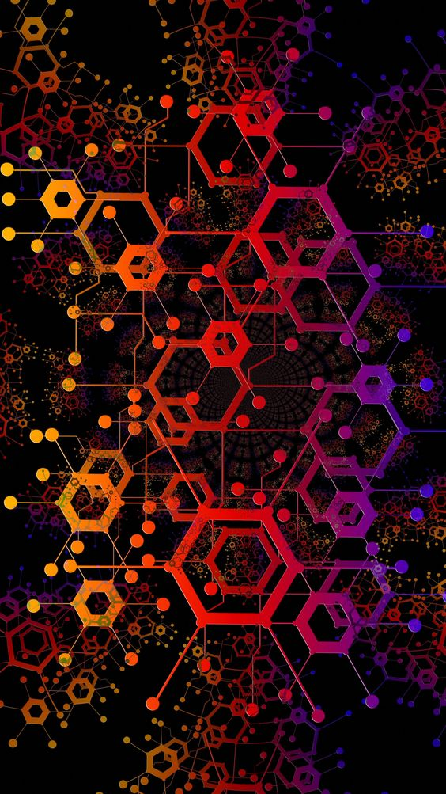

Site purpose
The purpose of my site is to inform and inspire those that wish to learn more about Neural networks and machine learning
Summary
I really like the look of black and white with greys mixed in. I feel that this really brings out the look of minimalism. However, when talking about neural networking, machine learning and artificial intelligence, these topics can be anything but simple. So focusing on a simple design but having enough visualization to show the site is based off of these concepts has been challenging. Looking at this page now, I feel that perhaps a background texture would be needed.